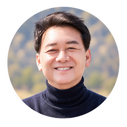
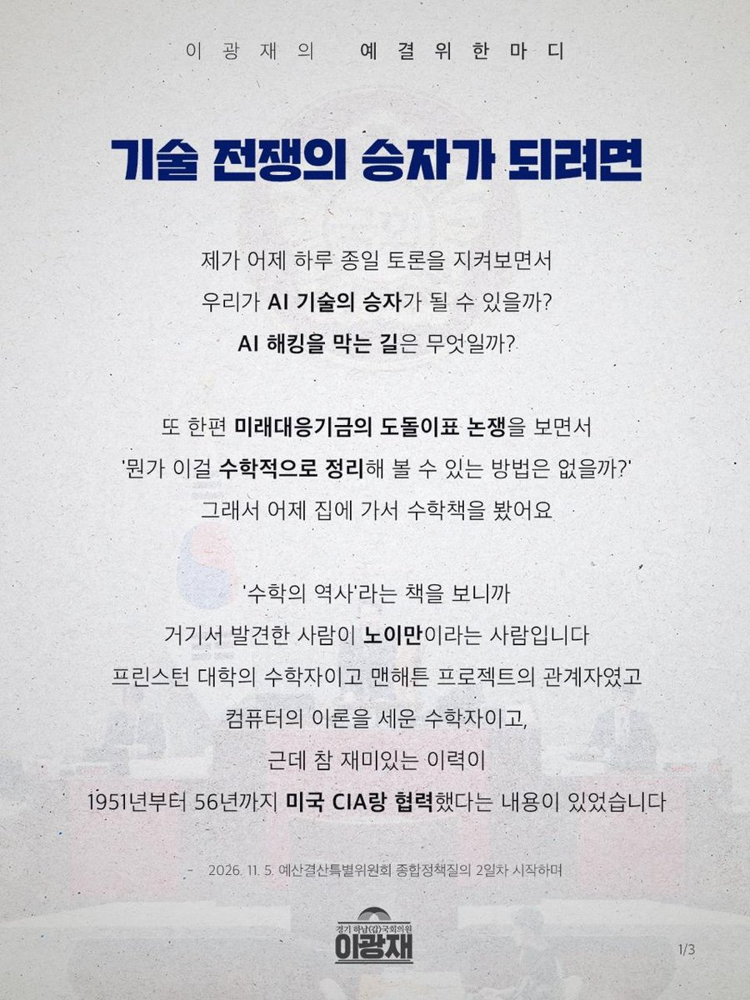
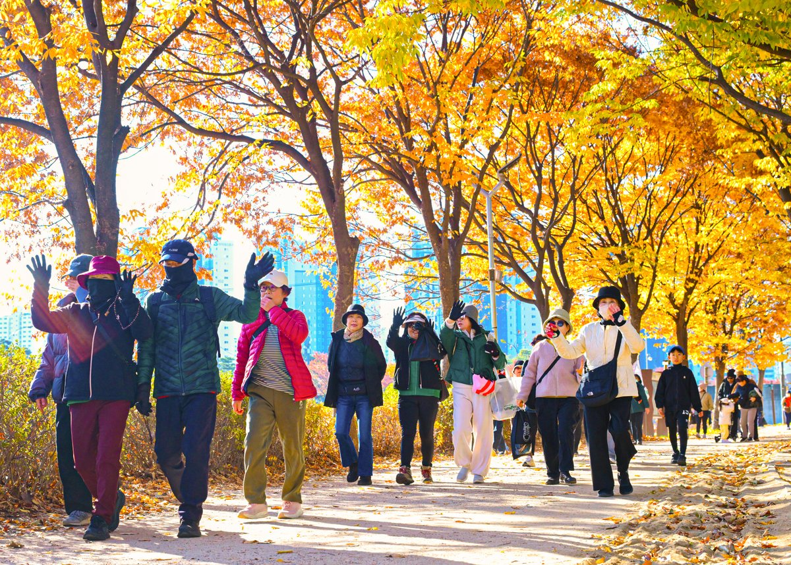
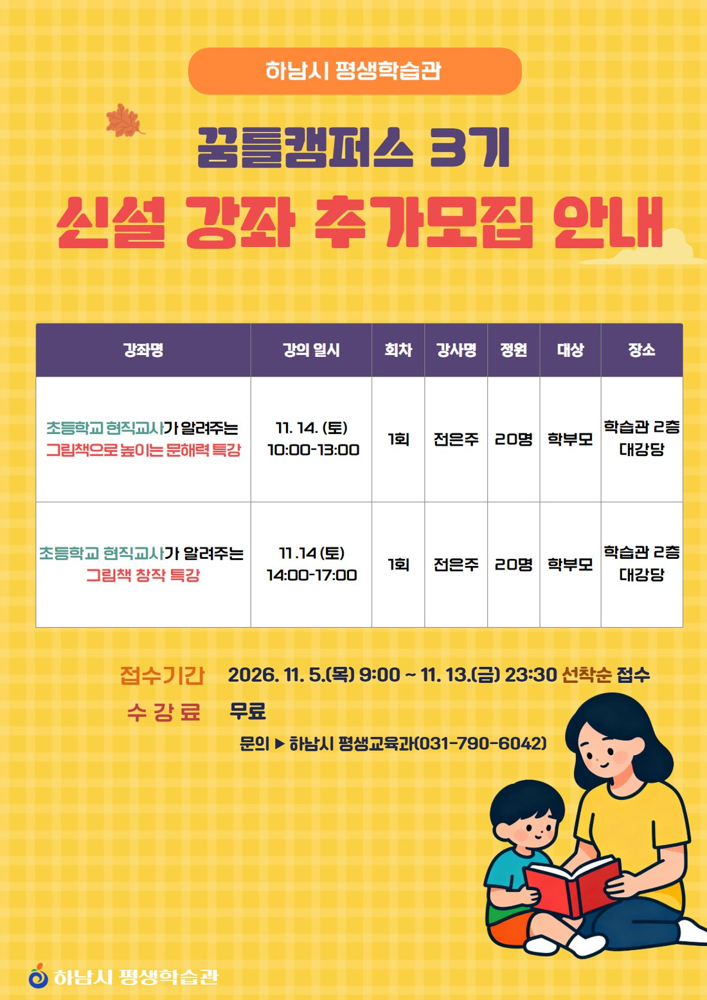
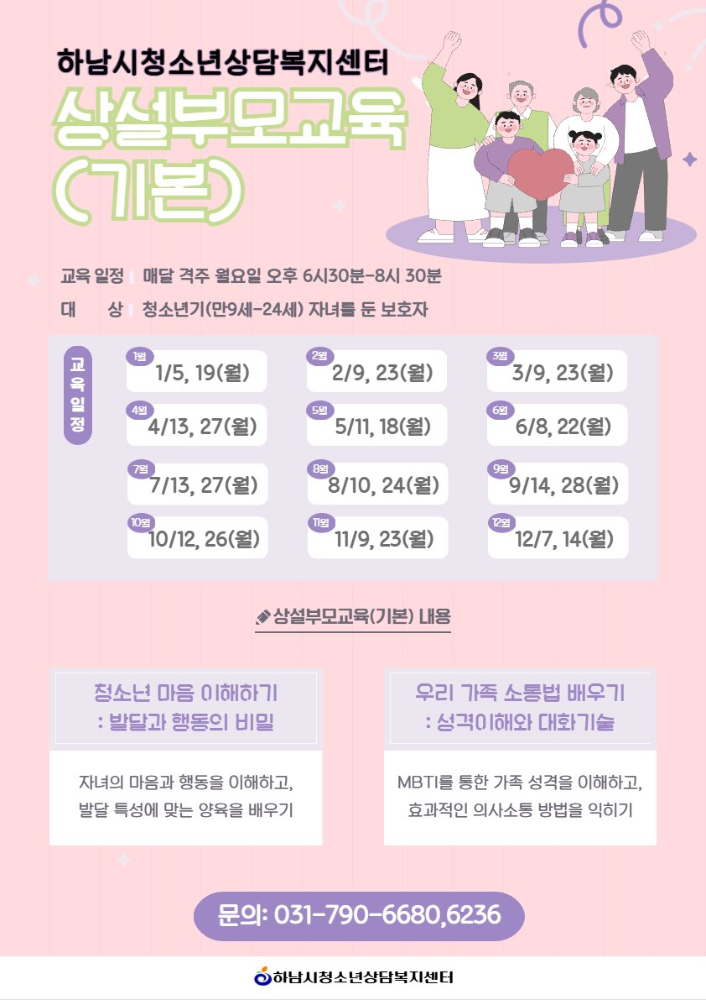

75호 | 2026년 11월 9일 발행
📌 이번 호 주요 목차

우리동네 국회의원 이광재📝 현장일지
이광재의원, "FBI·CIA는 벤처를 찾아갔다… 기술 전쟁의 승자가 되려면 국가 시스템을 총동원해야"
• 11월 5일 예결위 종합정책질의 2일차, 위원장 인사말로 AI 해킹과 기술 경쟁 화두 제시
• 컴퓨터 이론을 세운 수학자 노이만이 미국 CIA와 협력한 사례 소개
• 카드 사기 방지 벤처와 손잡은 FBI, 팔란티어에 투자한 CIA 투자회사 사례 언급
• 유럽 냉장고 해킹 사례를 들며 우리 국정원의 대응 역량 점검 필요성 강조
• 국가 시스템을 총동원해 기술 전쟁의 승자가 될 길을 함께 찾자고 제안
• 컴퓨터 이론을 세운 수학자 노이만이 미국 CIA와 협력한 사례 소개
• 카드 사기 방지 벤처와 손잡은 FBI, 팔란티어에 투자한 CIA 투자회사 사례 언급
• 유럽 냉장고 해킹 사례를 들며 우리 국정원의 대응 역량 점검 필요성 강조
• 국가 시스템을 총동원해 기술 전쟁의 승자가 될 길을 함께 찾자고 제안

📌 출처: 이광재 공식 네이버 블로그
📰 언론보도
[강원일보] 이광재의원, 하남 시민들과 고향 평창 김장축제… "제기된 지역 현안 해결에 힘 보태겠다"
이광재 국회 예산결산특별위원장은 7일 하남 시민들과 함께 고향 평창 진부면에서 열린 '제9회 평창 고랭지 김장축제'를 찾아 김장체험을 했습니다. 이 자리에서 배추가 농산물가격안정제 대상에서 빠져 농민들이 어려움을 겪는다는 건의를 듣고, 진부 지역 단체장들과 간담회도 가졌습니다. 이 위원장은 "주민들과 김장을 담그고 정을 나누게 돼 기쁘다"며 "오늘 제기된 지역 현안 해결에도 힘을 보태겠다"고 말했습니다. 축제는 16일까지 매일 오전 9시부터 오후 5시까지 열립니다.
📌 출처: 강원일보 (강동휘 기자)
📰 하남 지역 주요 뉴스
🏫 교육
오민용 도의원 "위례, 생활은 하나인데 행정은 셋"… 위례중 과밀 해소 위해 서울과 '공동학군' 제안
경기도의회 오민용 의원(더불어민주당, 하남1)이 5일 본회의 5분 자유발언에서 위례중학교 과밀 해소를 위해 경기도교육청과 서울시교육청의 공동학군 도입을 제안했습니다. 하남 위례의 중학교는 위례중 한 곳뿐으로, 전교생 1,369명에 학급당 31.1명이 공부해 과밀 기준(28명)을 넘었고 2030년에는 200명가량 더 늘 전망입니다. 오 의원은 길 건너 서울 위례솔중학교와 연계한 공동학군·위탁교육을 제안하며, 안민석 경기도교육감에게 두 교육청 공동 TF를 서둘러 꾸려 달라고 촉구했습니다.
📌 출처: 뉴스투데이24
🚋 교통
공정률 97%인데… 위례선 트램, 행정절차 지연에 연내 개통 '물 건너가'
위례신도시 주민 숙원인 위례선 트램 개통이 또 해를 넘기게 됐습니다. 공정률 97%로 시운전까지 진행됐지만, 노면전차 구간을 도로로 볼지 철도로 볼지를 두고 서울시와 서울경찰청의 협의가 늦어지면서 교통안전 심의 등 행정절차가 지연됐습니다. 마천역에서 복정역, 남위례역을 잇는 5.4㎞ 노선으로 정거장 12곳이 들어섭니다. 서울시는 내년 3월까지 교통시설 안전진단을 마치고 심의를 거쳐 내년 상반기 중 개통 시기를 확정할 계획입니다. 하남 위례 주민들은 거듭된 지연에 불만을 나타냈습니다.
📌 출처: 하남Times (박필기 기자)
🚶 생활·건강
한강 따라 건강한 발걸음… 미사한강모랫길·위례강변길 걷기대회에 시민 700여 명
하남시체육회가 주최한 '미사한강모랫길·위례강변길 건강 걷기대회'가 7일 시민 700여 명이 참여한 가운데 열렸습니다. 참가자들은 하남시청에서 덕풍천과 미사한강 모랫길을 지나 유니온파크까지 걷는 6㎞ 코스와 미사호수공원에서 출발하는 8㎞ 코스 가운데 하나를 골라 늦가을 정취를 즐겼습니다. 중학생부터 91세 어르신까지 함께했고, 반려견과 나온 시민도 눈에 띄었습니다. 이현재 하남시장은 지역 걷기 코스를 25곳으로 늘리고 감일·서하남IC 일대와 황산사거리 상습 정체를 개선하겠다고 밝혔습니다.

📌 출처: 경기일보 (황선주 기자)
💬 하남 맘카페 HOT 이슈
이번 주 하남 지역 맘카페(정다운 감일맘, 미사맘스클럽, 감일 교산 덕풍 미사 위례 하남맘, 하남미사교산4050 등)에서 많이 오르내린 HOT 이슈 TOP 3입니다.
1️⃣ [보육] "확정 전화 아직 안 왔어요"… 내년 어린이집 입소 확정 시즌, 감일·덕풍·미사 엄마들 '어디로 보내나'
현황: 내년 3월 신학기 어린이집 입소 확정 연락이 오가는 시기라 어린이집 후기를 묻는 글이 이어졌습니다. 감일맘 카페에는 "확정 전화는 아직인데 시립감일한별어린이집과 시립라포레숲속어린이집 중 어디가 좋을까요?"라는 글이, 덕풍에서는 "덕풍시립어린이집은 대기가 너무 많아 다들 어디 보내세요?"라는 질문이 올라왔습니다. 미사에서는 단지 안 민간·가정어린이집 비교 글이, 워킹맘들은 연장반을 운영하는 곳을 찾는 글이 많았습니다.
💡 주민 포인트: 입소 대기 순번과 확정 여부는 '임신육아종합포털 아이사랑'에서 확인할 수 있습니다. 맞벌이 가정이라면 상담 때 연장보육 운영 여부와 하원 시간을 꼭 물어보고, 대기가 길면 여러 곳에 대기를 걸어 두는 것도 방법입니다.
💬 주민 반응: 첫아이라 모르는 게 많다며 어린이집 분위기와 식사, 선생님 근속연수까지 꼼꼼히 묻는 글이 많았습니다.
📌 출처: 네이버 카페 (정다운 감일맘, 미사강변도시 미사맘스클럽, 감일 교산 덕풍 미사 위례 하남맘, 맘스홀릭 베이비)
2️⃣ [생활] "수능과 김장의 달 11월"… 수능 예비소집 안내 공유, 김장축제 나들이 후기도
현황: 입동(7일)을 지나 갑자기 추워지면서 "올해도 50일 남짓 남았다", "수능이라는 큰 산과 김장이 함께 오는 달"이라는 글이 공감을 얻었습니다. 고3 학부모 카페에는 11월 19일 수능을 앞두고 광주하남교육지원청 접수 수험생의 예비소집 안내가 공유됐고, 빈 김치통만 챙겨 가면 김장김치를 편하게 담가 올 수 있다는 김장축제 나들이 추천 글도 화제가 됐습니다. 이광재 의원도 7일 하남 시민들과 평창 고랭지 김장축제를 찾았습니다.
💡 주민 포인트: 수능 당일(11.19) 미사도서관 자료실은 오전 10시에 문을 엽니다. 평창 고랭지 김장축제는 16일까지 매일 오전 9시~오후 5시 열리니, 김장이 부담된다면 가족 나들이 겸 다녀오는 것도 방법입니다.
💬 주민 반응: 수험생 가족들의 평온한 11월을 기원하는 글과 함께, 올해는 김장을 축제장에서 해 볼까 고민한다는 반응도 보였습니다.
📌 출처: 네이버 카페 (하남미사교산4050 중고등, 감일 교산 덕풍 미사 위례 하남맘)
3️⃣ [교통] "벌써 네 번째 연기"… 97% 지어 놓고 멈춘 위례 트램, 내년 상반기로 또 밀려
현황: 위례선 트램이 공정률 97%에도 행정절차 지연으로 연내 개통이 어려워졌다는 소식이 위례·하남 카페에 공유됐습니다. "이번이 네 번째 연기"라며 정책 신뢰가 떨어졌다는 글과, 서울시가 발주한 교통시설안전진단 용역 내용을 정리한 글이 올라왔습니다. 같은 주 오민용 도의원이 위례중 과밀 해소를 위해 서울과의 공동학군을 제안하면서 "생활은 하나인데 행정은 셋"인 위례의 현실을 다시 짚는 글도 이어졌습니다.
💡 주민 포인트: 서울시는 내년 3월까지 교통시설 안전진단을 마치고 서울경찰청 교통안전심의를 거쳐 내년 상반기 중 개통 시기를 확정할 계획입니다. 트램이 지나는 교차로 13곳은 차량과 보행자 동선이 겹치니, 개통 전후로 아이들 통학길 안전 안내를 함께 챙겨 주세요.
💬 주민 반응: 신도시 입주 10년이 넘도록 약속이 지켜지지 않았다는 아쉬움과 함께, 내년에는 꼭 개통되길 바란다는 의견이 많았습니다.
📌 출처: 네이버 카페 (돈이 되는 부동산 정보, 부동산 스터디)
🎭 ALL IN 하남라이프
2026년 11월 9일 기준 한눈에 보는 하남시 최신 문화·행사·교육 안내 가이드
📚 11.14(토) | 하남시평생학습관 2층 대강당 · 접수 ~11.13(금) 23:30
[하남시평생학습관] 꿈틀캠퍼스 3기 신설 강좌 추가모집… 초등 현직교사가 알려주는 그림책 특강
"그림책으로 아이 문해력을 키워 보세요"
하남시평생학습관이 학부모를 위한 꿈틀캠퍼스 3기 신설 강좌 2개를 추가 모집합니다. 초등학교 현직교사 전은주 강사가 하루 동안 진행합니다.
📖 강좌①: 그림책으로 높이는 문해력 특강 · 11월 14일(토) 10:00~13:00
✏️ 강좌②: 그림책 창작 특강 · 11월 14일(토) 14:00~17:00
📍 장소: 하남시평생학습관 2층 대강당
👥 대상·정원: 학부모 · 강좌별 20명 (선착순)
🗓 접수: 11월 5일(목) 09:00 ~ 11월 13일(금) 23:30
💰 수강료: 무료
☎️ 문의: 하남시 평생교육과 031-790-6042
하남시평생학습관이 학부모를 위한 꿈틀캠퍼스 3기 신설 강좌 2개를 추가 모집합니다. 초등학교 현직교사 전은주 강사가 하루 동안 진행합니다.
📖 강좌①: 그림책으로 높이는 문해력 특강 · 11월 14일(토) 10:00~13:00
✏️ 강좌②: 그림책 창작 특강 · 11월 14일(토) 14:00~17:00
📍 장소: 하남시평생학습관 2층 대강당
👥 대상·정원: 학부모 · 강좌별 20명 (선착순)
🗓 접수: 11월 5일(목) 09:00 ~ 11월 13일(금) 23:30
💰 수강료: 무료
☎️ 문의: 하남시 평생교육과 031-790-6042

📌 출처: 하남시평생학습관
🎵 12.26(토) 17:00 | 하남문화예술회관 대극장 · 예매 진행 중
[하남문화재단] 2026 송년음악회 Ⅱ '가장 완벽한 엔딩'… 조기예매 20% 할인은 12월 6일까지
"좋은 좌석은 빠르게 마감됩니다"
크로스오버그룹 포르테나와 뮤지컬배우 박소연·이지수가 함께하는 하남문화재단 송년음악회 두 번째 무대입니다. 지난 6일 티켓이 열려 지금 예매할 수 있습니다.
🗓 공연: 2026년 12월 26일(토) 17:00 (110분)
📍 장소: 하남문화예술회관 대극장(검단홀)
👥 관람연령: 초등학생 이상
💰 티켓: R석 80,000원 · S석 70,000원 · A석 50,000원
🎟 할인: 하남시민 20% · 조기예매(~12/6) 20% · 재단 플러스친구 10%
✍️ 예매: 하남문화재단 홈페이지, NOL 티켓
☎️ 문의: 하남문화예술회관 031-790-7979
크로스오버그룹 포르테나와 뮤지컬배우 박소연·이지수가 함께하는 하남문화재단 송년음악회 두 번째 무대입니다. 지난 6일 티켓이 열려 지금 예매할 수 있습니다.
🗓 공연: 2026년 12월 26일(토) 17:00 (110분)
📍 장소: 하남문화예술회관 대극장(검단홀)
👥 관람연령: 초등학생 이상
💰 티켓: R석 80,000원 · S석 70,000원 · A석 50,000원
🎟 할인: 하남시민 20% · 조기예매(~12/6) 20% · 재단 플러스친구 10%
✍️ 예매: 하남문화재단 홈페이지, NOL 티켓
☎️ 문의: 하남문화예술회관 031-790-7979
📌 출처: 하남문화재단
🏛️ 공공기관 소식지
2026년 11월 9일 기준 하남시 공공기관 주요 공고·신청 안내입니다.
📚 하남시미사도서관 | 11.19(목) 수능일
수능일(11.19) 미사도서관 자료실, 오전 10시에 문 엽니다
"수험생의 시험과 교통 혼잡 완화를 위해"
2027학년도 대학수학능력시험 당일, 하남시미사도서관 자료실 운영 시작 시간이 한 시간 늦춰집니다.
🗓 적용일: 2026년 11월 19일(목) 수능 당일
⏰ 변경 전: 오전 9시 운영 시작
⏰ 변경 후: 오전 10시 운영 시작
📌 안내: 수험생의 원활한 시험 진행과 교통 혼잡 완화를 위한 조정이니 이용에 참고해 주세요
2027학년도 대학수학능력시험 당일, 하남시미사도서관 자료실 운영 시작 시간이 한 시간 늦춰집니다.
🗓 적용일: 2026년 11월 19일(목) 수능 당일
⏰ 변경 전: 오전 9시 운영 시작
⏰ 변경 후: 오전 10시 운영 시작
📌 안내: 수험생의 원활한 시험 진행과 교통 혼잡 완화를 위한 조정이니 이용에 참고해 주세요
📌 출처: 하남시미사도서관
👨👩👧 하남시가족센터 | 11.20(금) 09:30~13:00
2026 하남시가족센터 가족축제 'My Way, My Family' 참여자 모집
"다른 길을 걸어도, 우리는 하나의 가족"
하남시가족센터가 가족과 이웃이 함께 즐기는 가족축제를 열고 참여자를 모집합니다.
🗓 일시: 2026년 11월 20일(금) · 부스 행사 09:30~13:00 / 기념식 10:30~11:30
🎪 내용: 기념식, 다양한 체험부스, 포토존, 선물과 커피 케이터링
✍️ 신청: 네이버 폼 참여 신청 (장소와 세부 내용은 신청폼에서 확인해 주세요)
하남시가족센터가 가족과 이웃이 함께 즐기는 가족축제를 열고 참여자를 모집합니다.
🗓 일시: 2026년 11월 20일(금) · 부스 행사 09:30~13:00 / 기념식 10:30~11:30
🎪 내용: 기념식, 다양한 체험부스, 포토존, 선물과 커피 케이터링
✍️ 신청: 네이버 폼 참여 신청 (장소와 세부 내용은 신청폼에서 확인해 주세요)
📌 출처: 하남시가족센터
👪 하남시청소년상담복지센터 | 11.9(월)·11.23(월) 18:30~20:30
2026 상설부모교육(기본) — 청소년 자녀 마음 이해하고 가족 소통법 배우기, 무료
"아이와 대화가 잘 안 된다고 느끼시나요?"
하남시청소년상담복지센터가 청소년 자녀를 둔 부모를 위한 상설 부모교육을 매달 격주 월요일 저녁에 엽니다.
🗓 11월 일정: 11월 9일(월)·23일(월) 18:30~20:30 (12월은 7일·14일)
👥 대상: 청소년기(만 9~24세) 자녀를 둔 보호자
📖 내용: 청소년 마음 이해하기(발달과 행동의 비밀), 우리 가족 소통법 배우기(MBTI로 보는 성격 이해와 대화기술)
💰 교육비: 무료 · 매월 선착순 마감
✍️ 신청: 전화로만 접수 031-790-6680
하남시청소년상담복지센터가 청소년 자녀를 둔 부모를 위한 상설 부모교육을 매달 격주 월요일 저녁에 엽니다.
🗓 11월 일정: 11월 9일(월)·23일(월) 18:30~20:30 (12월은 7일·14일)
👥 대상: 청소년기(만 9~24세) 자녀를 둔 보호자
📖 내용: 청소년 마음 이해하기(발달과 행동의 비밀), 우리 가족 소통법 배우기(MBTI로 보는 성격 이해와 대화기술)
💰 교육비: 무료 · 매월 선착순 마감
✍️ 신청: 전화로만 접수 031-790-6680

📌 출처: 하남시청소년상담복지센터
© 2026 우리동네 진짜일꾼 이광재